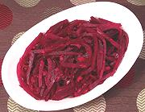

|
Beet SaladGermany - Geriebener Rote Bete-Salat mit Merrettich | ||||
| Serves: Effort: Sched: DoAhead: |
6 salad ** 8 hrs Best |
A salad any beet lover (and some who thought they didn't like beets) will enjoy. No dairy products in this one, and the horseradish is very mild. | |||
|
2 5 ---- 1/2 3/4 2 2 1 1/2 ---- 2 |
# oz --- c c T t T t --- T |
Beets Onion -- Dressing Cider Vinegar Water Horseradish (1) Sugar Caraway seeds Salt ---------- Oil (2) |
Make: - (8 hrs - 40 min work)
|